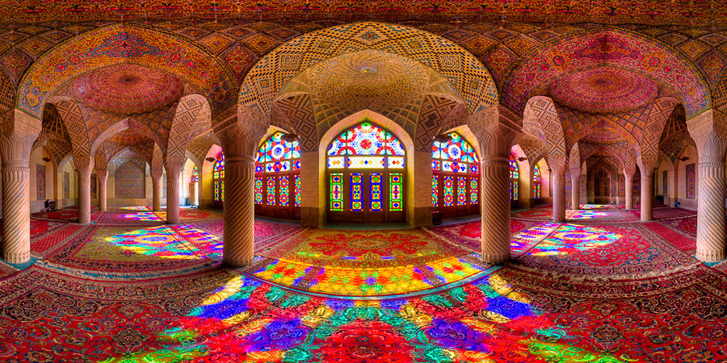
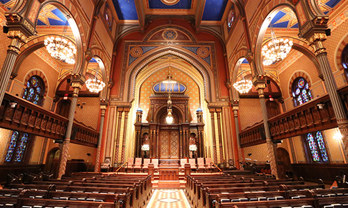

Islam

Early History
- Began with prophet named Muhammad
- Allah is the name of God
- Allah is believed to be the creator, provider, and determiner of all destiny
- The group of followers who only followed Allah was called Hanifs
- Hanifs were the beginning of islam
- Followers of Islam are known as Muslims
Core Beliefs
- Islam is Monotheistic, only worshipping one God
- Angels: Unseen beings created by God
- Angels were created to help God run his kingdom
- 6 Prophets of God: Adam, Noah, Abraham, Moses, Jesus, and Muhammad
- Day of Judgement: On the day you die, God determines your morals and faith, then determines your destiny (Heaven/Hell)
- Nothing happens without God's knowledge of it. (God is always with you)
Important Texts
- The Quran is the holy text of Islam
- Quran was revealed to prophet Muhammad over a span of 23 years
- 114 chapters were written in an Arabic dialect
- 6 Prophets of God: Adam, Noah, Abraham, Moses, Jesus, and Muhammad
- Regarded to be the sacred words of God, and a corrected version of the old and new testament
- Nothing happens without God's knowledge of it. (God is always with you)
Important People
- Prophets: Abraham, Moses, Muhammad
-
Abraham
- Called Ibrahim
- Had trouble understanding the concept of God
- Abraham was a Hernif (NOT Jewish or Christian)
- No relationship with God, but was given the ability to choose prophets by God
-
Moses
- Called Musa/Moshe Kabbenu (Moses our teacher)
- God told his mother to put him in a box, foating across the nile river, and told her that he would keep baby Moses safe
- He was found floating down the river by a Pharoh, who raised him
-
Muhammed
- Born in Mecca
- The final prophet
- Was told the Quran by an angel named Jibreel, who recited God's words
Major Branches
- Two major branches: Sunni and Shia
- Most differences are derived from historical experiences or sociopolitical developments
-
Sunni believes Abu-Bakr to be the successor to Muhammad
- Abu-Bakr was a political leader at the time
- Shia believes Ali to be the successor to Muhammad
- The conflict of Muhammad's successor split Islam into two groups in the first place
Holy Places
- The Islam place of worship is called a Mosque
- The first Mosque was Muhammad's home in Medine
- A simple Mosque consists of a prayer room with a wall facing towards Mecca marked with a mihrab
- Mecca is the birthplace of Muhammad
- A ritual is performed by Muslims weekly called Wudu, to maintain good spiritial and physical hygene
Holidays
- There are two main Islamic holidays
-
Eid ul Fitr
- First celebrated by Muhammad after victory of the battle of Jang-e-Badar
- Celebrates the end of fasting, a self control practice
-
Eid ul Adna
- A 4 day public holiday
- Comemmorates Ibrahim's willingness to sacrifice his son when ordered by God
Interesting Facts
-
Muslims follow a set of rules called The Five Pillars:
- Belief
- Worship
- Fasting
- Almsgiving
- Pilgrimage
- Islamic art is usually very vibrant
- It is believed that all art in Islam may only be for religious purposes, but includes artistic traditions in culture
Judaism

Early History
- Began around 2000 B.C. in Canaan
- Judaism is taught from the Torah
- 3 main founders (mentioned below), known as the Patriarchs
- Abraham was the first person to spread the beliefs of Judaism
Core Beliefs
- Judaism is Monotheistic, only worshipping one God
- Believed that god is transdecent, above physical human experience
- Believed that god has no physical body, and that he created the universe alone
- God is believed to be omnipresent and omnipotent
Important Texts
- The sacred text of Judaism is the Torah, which is also the old testament of the bible
- The Torah has 5 books: Exodus, Genesis, Leviticus, Numbers, and Devarim
- It is believed that God told Moses the entire text of the Torah
- There are 613 commandments in the Torah, but only the most important ten are usually referenced
Important People
- Prophets: Abraham, Moses, Joshua
-
Abraham
- The first prophet
- Abraham was tasked with spreading God's word
-
Moses
- God has spoken with Abraham
- After God told Abraham all 613 commandments that are in the Torah today
-
Joshua
- One of Moses' successors
- Joshua is the bible's most famous warrior
Major Branches
- There are actually seven branches in Judaism
- Reform Judaism: A modernized form of Judaism with more open ideas
- Orthodox Judaism: The most traditional form of judaism. Most orthodox Jews believe Jewish law is essential
- Conservative Judaism: A more traditional form of Judaism that combines both reform and orthodox
Worship
- Jews worship in a synagogue, usually in weekly services
- A Rabbi, Cantor, or a member of congregation usually runs the services
- In orthodox services, men and women sit apart, while they sit together in reform services
- Every synagogue contains an arc, where sacred texts are stored
Holidays
-
Hanukkah
- Hanukkah is the celebration of the end of war
- Lasts eight days
- Menorah: Candleabrum with nine candles, eight of which represent a day of Hankkah
-
Passover
- Celebrates the Exodus, the freedom of slavery from ancient Egypt
- The Exodus followed the Ten Plagues
Interesting Facts
- Jewish laws are known as Halakhah
- The Hebrew Bible is called the Tanakna
- There are four new years in Judaism